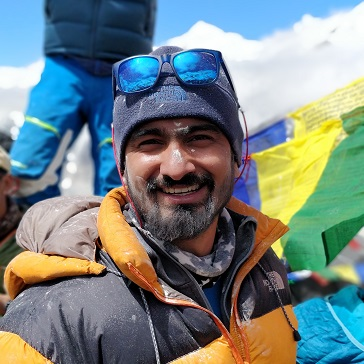

 I, Rahul Jarngal was born on 8th of nov 1990 in a small town Hiranagar Hiranagar in earstwhile Jammu and Kashmir state of India. My father worked in a central govt job so our family kept moving from one place to another across the country with my fathers transfers. I studied pre-school in Infant Jesus High School Hiranagar then primary from KV No.2 Udhampur followed by secondary education in three different Navodaya Vidayalas i.e JNV Mothuka, Faridabad; JNV Najochak, Pathankot and JNV Basohli, Kathua.
I became interested sports while staying at hostel of JNV Najochak. I started playing basketball which involved rigrous workout and training. After joining JNV Basohli my interest shifted to Table Tennis and Track & Field Athletics. I played at Navodaya National games twice and was declared best athlete of the entire chandigarh region in under 19 catagory. Though I was very passionate about joining defence after school but somehow missed my SSB interviews multiple times and coudn't make it.
I graduated in Instrumentation & Control Engineering from NIT Jalandhar. Love of Track continued and kept participating in intra-college and inter-universitiy athletics events till i had to take a break due to pelvis and back injury. I wasn't very studious during my college days and was more focussed in practical things. I actively volunteered in organising college cultural festivals and participated in few robotics related competetions. During final year of college I volunteered to be the placement coordinator of my class and assisted in getting most of the students placed in reputed companies.
After college I worked in a french EPC company, Technip for an year before joining ONGC Ltd. where I am still working as an Instrumentation and Control System Expert.
I became interested in mountaineering while working in ONGC. In 2015 ONGC sent a team of its employees to the base camp of mount Everest. In safe return ONGC management decided to plan an expedition to summit mount Everest. The idea fascinated me and I applied immediately. After going through miltiple selection and filtering procedure I finally made it to the team of 8 ONGC employees who went on ONGC Eco Everest Expedition - 2017. I after staying in basecamp for 1 and a half month, going through multiple acclimatization climbs I reached the summit o 27th of may, 2017.
After climbing Everest I was again selected for ONGC Kanchenjunga Expedition-2018. Kanchenjunga was summited on 21st may, 2018. On the night of summit our team scaled the final 1200m climb in record time of 8 hours but we had to wait for two hours on summit in bone chilling temperatures as it was dark and taking pictures wasnt possible.
My favourite website is Google. But I spend most of my time during office on ONGC Reports.